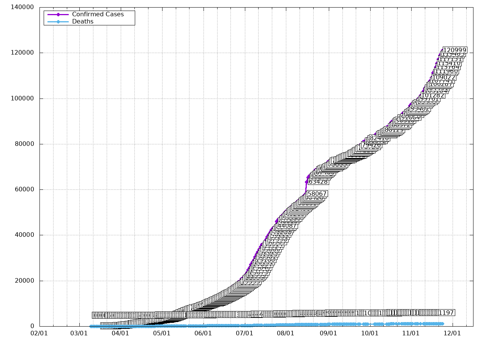

Data is taken daily from official Dallas County statistics published online, typically between 10AM and 1PM. For more detailed information, visit https://www.dallascounty.org/covid-19/. To download the raw data used in this graph, click here.
This website is not affiliated with Dallas County.